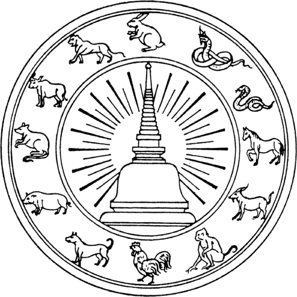

จังหวัดนครศรีธรรมราช
| อักษรไทย | อักษรโรมัน | ชื่อไทยอื่น ๆ | พื้นที่ | ประชากร |
|---|---|---|---|---|
| นครศรีธรรมราช | Nakhon Si Thammarat | นคร, เมืองคอน, คอน, นครศรี, ตามพรลิงก์, ลิกอร์, คิวคูตอน, ตันเหมยหลิง, ละคร | 9,942.502 ตร.กม. | 1,557,482 คน |
คำขวัญประจำจังหวัด : เราชาวนครฯ อยู่เมืองพระ มั่นอยู่ในสัจจะศีลธรรม กอปรกรรมดี มีมานะพากเพียร ไม่เบียดเบียนทำอันตรายผู้ใด
สัญลักษณ์ประจำจังหวัด
ดอกไม้ประจำจังหวัด : ราชพฤกษ์
ต้นไม้ประจำจังหวัด : ต้นแซะ

ตราประจำจังหวัด
